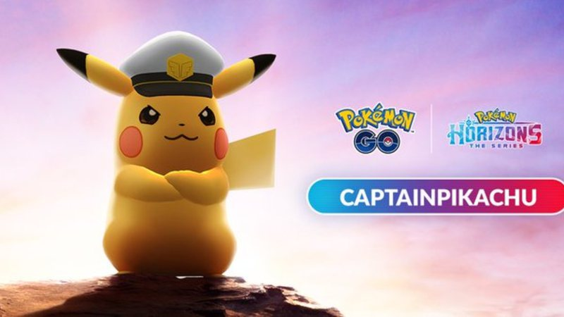
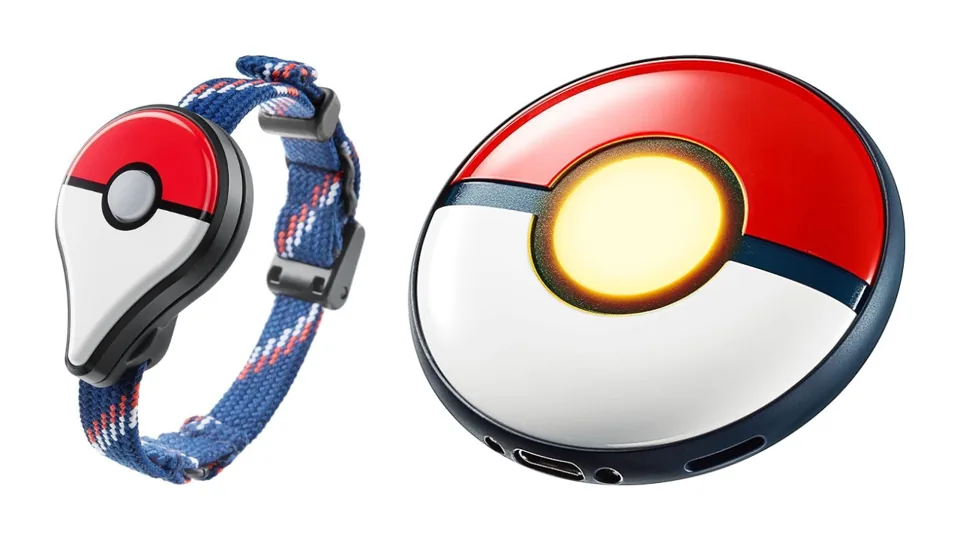

Pokémon GO - Todas as Pesquisas de Campo e Recompensas (Março/2024)
A seguir você confere uma lista com todas as Pesquisas de Campo disponíveis em Pokémon GO. Para conseguir pesquisas de campo, o jogador deve girar discos de Poképaradas. Essa lista não inclui as pesquisas de campo exclusivas de evento. Estas pesquisas de campo…
por Danilo Andretta - 06/03/2024
.jpg)
Kyogre Primitivo e Groudon Primitivo liberam os elementos em todo mundo para os novos eventos do dia de Reides!
A Niantic anunciou duas novas edições do evento Dia de Reides no Pokémon GO, com destaque para os lendários Kyogre Primitivo e Groudon Primitivo. O evento terá passes de reide gratuitos para os jogadores…
por Danilo Andretta - 05/03/2024

Dia Comunitário de março de 2024: Litten
A Niantic anunciou que Litten será o Pokémon em destaque no evento de Dia Comunitário de março no Pokémon GO! Durante o evento, os jogadores poderão encontrar Litten Shiny com mais frequência. Confira os destaques a seguir…
por Danilo Andretta - 29/02/2024

Pokémon GO: veja o código da pesquisa para Capitão Pikachu
Celebrando a nova aventura em animação Pokémon Horizontes, já disponível na Netflix, o game mobile recebe uma pesquisa especial, adicionada através de um código divulgado pela desenvolvedora Niantic, onde os jogadores poderão capturar…
por Gisele Henriques - 29/02/2024
